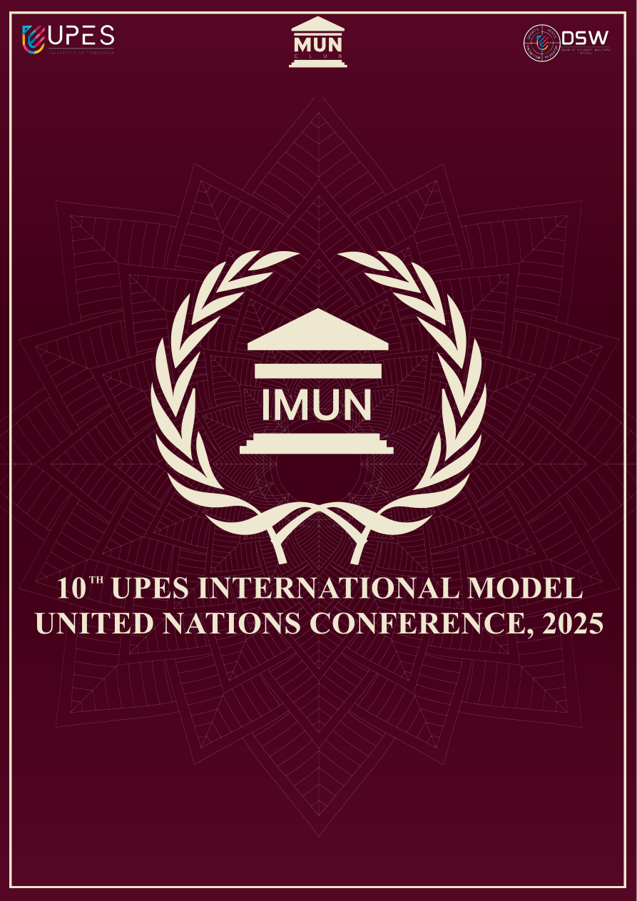
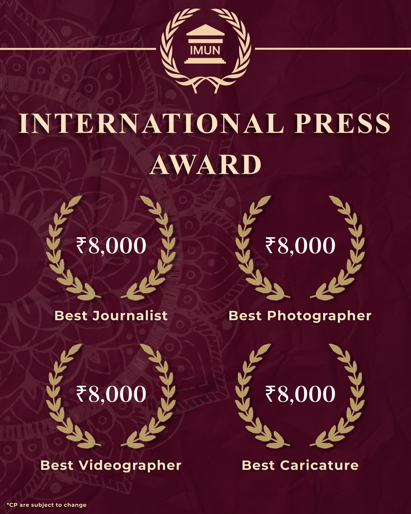

CAMPAIGN CASE STUDY · UPES MUN
One system across the event.
A campaign identity delivered through 50 assets across 10 formats, including a 14-page brochure.
Problem and process
A large student conference needed one visual language across screens, rooms, and delegate materials. I built a connected system for print, social, signage, registration, and delegate-facing collateral.
Selected assets



Outcome
A consistent delegate experience across print, social, and signage.